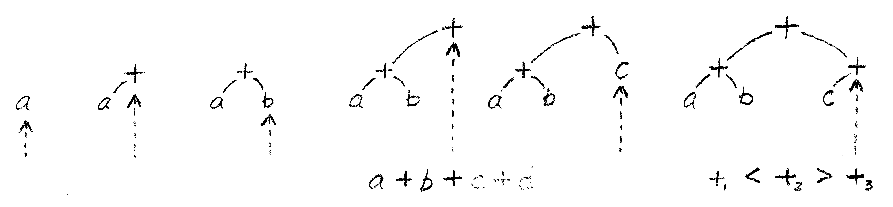

Operation-Oriented, Functional C
25 MAR 2019
I don't drink the coolaid (→ failed programming paradigms in college), yet now I find myself proselytizing functional features for a better C. It turns out coolaid is a drink you make yourself. So what is functional programming?
Any decent functional language ought to support infix operators (C++ partially improves C in this regard). For example, (a + b) + (c + d) should be equivalent to +(+(a, b), +(c,d)). Regardless of parenthesization, the function must be unambiguously identified at the call site. Further, parenthesis should often be unnecessary.
Function signatures should be paired with an evaluation order and some operators should evoke an order for expression evaluation. For example binary operations (a subset of functions) like addition +: U32 × U32 → U32 should alternate associativity, such that the default parsing of a + b + c + d is
i.e. odd-indexed binary operators bind closer and are evaluated first, and the usual functional evaluation order is bottom-up.
Piggybacking on this, many new functional languages emphasize bottom-up immutability, but what makes C timeless is certain expressions are evaluated top-down, in particular memory address calculations and memory loads can be reversed to store data and update the global memory map.
I plan to write more about this "lambda function" λ: u64 → u64, basically C's *dereference operator, but for now, if the generic concept of pointers is the universal anonymous function, then we can add implication → to our expressions and assert top-down statements of truth. (if () then {} conditionals fit nicely in this framework as well.)
So what is the functional paradigm really? I think it is a convenient syntax for writing expressions and a composable semantics of object propositions with functions as logical implications.